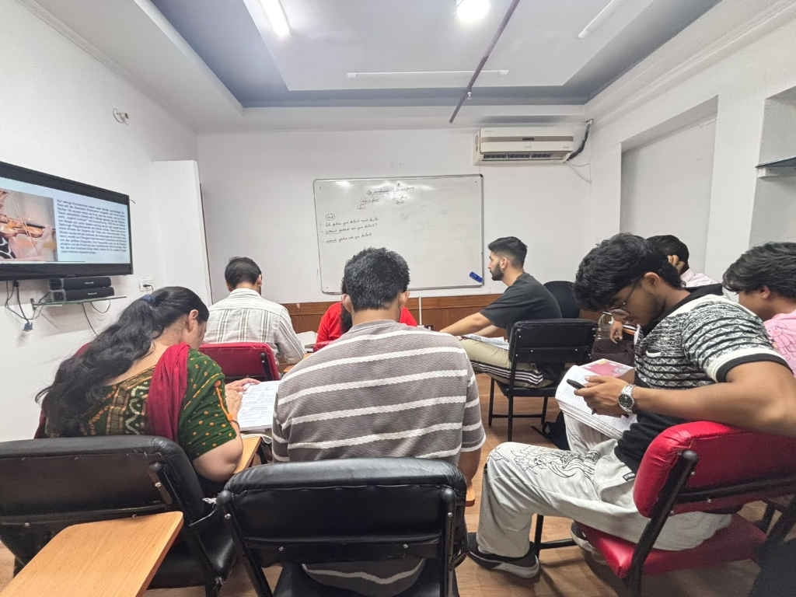
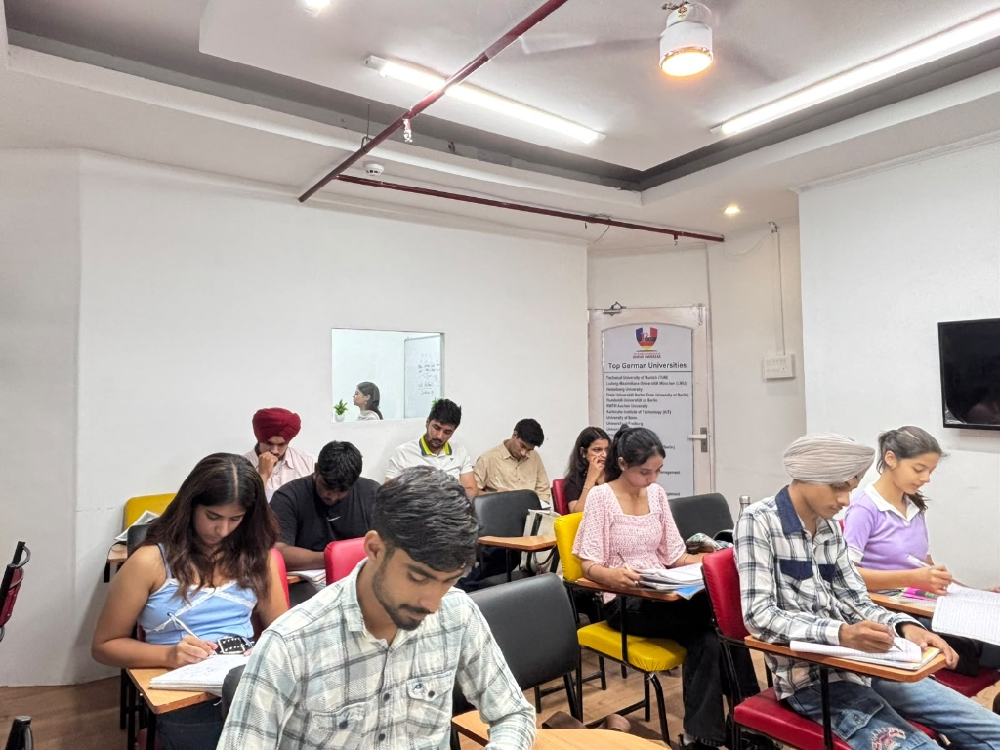
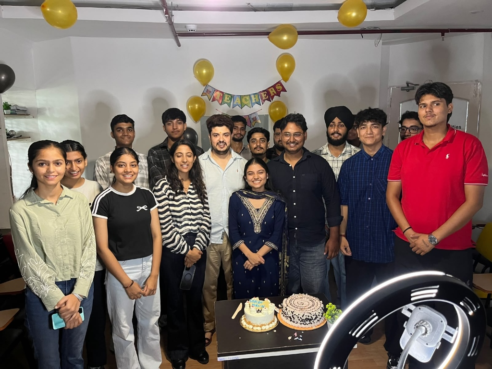
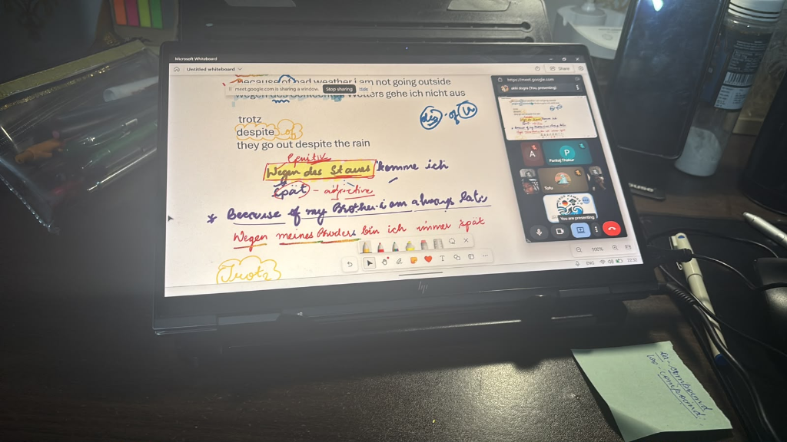

Looking for the best German class or course in Chandigarh? Welcome to German Guru, the premier German institute for certified German tuition and expert German language tutor in CHD. Accelerate your European career and university goals with certified German masterclasses from A1 to C1. Join interactive small-batch offline classes at our prime Sector 34A Chandigarh campus or attend live HD interactive sessions online from anywhere.
Attend a 1-on-1 trial class with our German Master Trainers.
Welcome to German Guru — whether you are searching for dedicated German tuition (tution), the most recommended German language tutor in CHD, or enrolling in the best German class or course in Chandigarh, our accredited German institute in Sector 34A guarantees rapid fluency and 100% exam readiness.
Recognized across Tricity as the best German class and course for CEFR A1 to C1. Fast-track syllabus aligned with Goethe-Institut and TELC standards.
Explore German CourseStudy with the most experienced German tutor in Chandigarh & Tricity. Master native German pronunciation, speaking confidence, and accent reduction.
Meet German TutorsPersonalized German tuition (tution) designed for school students, college learners, and nursing applicants who require dedicated grammar drills.
View Tuition BatchesYour trusted German institute (institue) in Chandigarh Sector 34A offering state-of-the-art offline audio labs, weekly mock exams, and Germany Ausbildung help.
Visit Chandigarh CampusTake a look inside our interactive offline classes at Sector 34A Chandigarh and our worldwide live Zoom masterclasses. Real students, real batches, real results.

Master trainer conducting engaging German speaking circles and CEFR grammar orientation.

Worldwide students actively practicing German dialogue framing and vocabulary in real-time.

Strict small batch sizes (8-10 students) ensuring individual focus, desk corrections, and spoken practice.

Equipped with multimedia screens and native audio playback for Goethe listening exam preparation.

Targeted training for Goethe-Zertifikat B1/B2, TestDaF, and study abroad pathways in Germany.

Celebrating Goethe certificate clearances, Teacher's Day, and student exam milestones at our campus.

Live stylus breakdown of German Genitiv prepositions (trotz, wegen) during online interactive classes.
View high-resolution photos or schedule an in-person campus visit in Sector 34A Chandigarh.
View Full GalleryRated the best German class or course in Chandigarh. Every level incorporates rigorous Speaking, Listening, Reading, and Writing (Schreiben) practice guided by an experienced German tutor in Chandigarh and aligned with Goethe-Institut and TELC standards.
Master core pronunciation, essential vocabulary, sentence framing, and basic conversations.
Expand your grammar mastery, narrate past events, and engage in daily fluid conversations.
The crucial gateway credential for German University Admissions, Ausbildung, and Job Visas.
Mandatory qualification for Nurses, Healthcare Staff, IT Professionals, and Skilled Workers in Germany.
Near-native fluency required for German Public University Degree programs & executive leadership.
Study in Germany with 0€ tuition fee and earn an official monthly stipend of 800€ - 1,300€ while learning.
Authoritative guide for candidates comparing German language level durations, Goethe exams, and visa utility.
| CEFR Level / Module | Standard Duration | Daily Schedule | Target Exam | Career & Visa Application |
|---|---|---|---|---|
| A1 Beginner | 2 Months | 2 Hours Daily | Goethe Start Deutsch 1 | Spouse visa, basic travel communication, foundational German syntax |
| A2 Elementary | 2 Months | 2 Hours Daily | Goethe-Zertifikat A2 | Workplace basics, daily conversations, Au Pair programs in Germany |
| B1 Intermediate (Full) | 2.5 Months | 3.5 Hours Daily | Goethe / TELC B1 | Job Seeker Visa, German Citizenship (Einbürgerung), Studienkolleg entry |
| B1.1 Intensive | 1.5 Months | 4 Hours Daily | Goethe B1 Prep | Fast-track intermediate foundation for urgent intake timelines |
| B2 Upper Int. (Full) | 3 Months | 4 Hours Daily | Goethe / TELC B2 | Germany Ausbildung (Nursing, IT, Tech), Work Visa, Medical licensing |
| B2.2 Advanced Finish | 1.5 Months | 4 Hours Daily | Goethe B2 / TELC B2 | Healthcare clinical registers, tech interview readiness & B2 exam clearance |
| C1.1 Academic Part 1 | 2 Months | 4 Hours Daily | Goethe C1 / TestDaF | Higher education prep, scientific German discourse & complex syntax |
| C1.2 Academic Part 2 | 2 Months | 4 Hours Daily | Goethe C1 / TestDaF | Direct German university degree admissions, research fellowships, teaching |
At German Guru, whether you walk into our modern campus in Sector 34A Chandigarh or log in from any country via our interactive HD online studio, you get the same world-class training quality.
We do not believe in mass factory-style teaching. Our proven pedagogy focuses on spoken fluency, Goethe exam clearing, and holistic European immigration support.
Every student speaks German every single day. Our trainers monitor your pronunciation, case endings, and speaking confidence individually.
Learn from senior trainers with C1/C2 certifications and 8+ years of dedicated coaching for Start Deutsch 1, Goethe B1/B2, and TestDaF.
Weekly timed exam simulations for all 4 modules (Hören, Lesen, Schreiben, Sprechen) using authentic past papers to guarantee high scores.
Complimentary official textbooks (Netzwerk Neu, Studio d, Aspekte), vocabulary cheat sheets, listening audio files, and grammar summaries.
From German CV formatting (Europass) to Motivation Letters, Blocked Account setup, and embassy visa interview mock drills.
Need a quick revision before your official Goethe exam? Attend an ongoing batch revision without paying any additional fee.
Unsure whether to enroll in A1, A2, or jump straight to Goethe B1? Take this 5-question quick quiz and get an immediate personalized level recommendation!
Direct, concise answers to essential questions about German classes, tuition batches, fees, and campus locations in Chandigarh.
German Guru in Sector 34A Chandigarh is widely recognized as having the best German language tutors in CHD. Our faculty members hold C1/C2 Goethe certifications with over 8 years of specialized teaching experience. We maintain a 99.2% first-attempt Goethe exam pass rate and strictly cap batches at 8 to 10 students to ensure personal speaking corrections every day.
Our flagship offline institute is located at SCO Number 80-81-82, 1st Floor, Corner Building, Sector 34A, Chandigarh - 160034. Sector 34A is the central educational hub of Chandigarh with seamless transit from Mohali, Panchkula, Zirakpur, and ISBT 43/17. Our campus features smart audio-visual listening labs, a physical library, and simulated Goethe test rooms.
Yes. German Guru provides both options with equal pedagogical rigor:
We conduct structured CEFR German courses with rigorous daily schedules across all levels and sub-modules:
German Guru provides a 100% end-to-end pathway for the German vocational training (Ausbildung) program. We train candidates to clear official B1/B2 Goethe certification, create German Europass CVs and Motivation Letters, arrange direct German employer interviews (offering a monthly stipend of 800€ to 1,300€ with zero tuition fees), and conduct German embassy visa mock drills.
Booking a trial class is quick and 100% free. Click any "Book Free Demo" button or send a WhatsApp message to our direct helpline at +91 6280723651. Our chief counselor will confirm your trial slot within 2 hours.
Speak directly with our German Master Trainers or visit our Chandigarh Sector 34A campus for free level placement counseling.